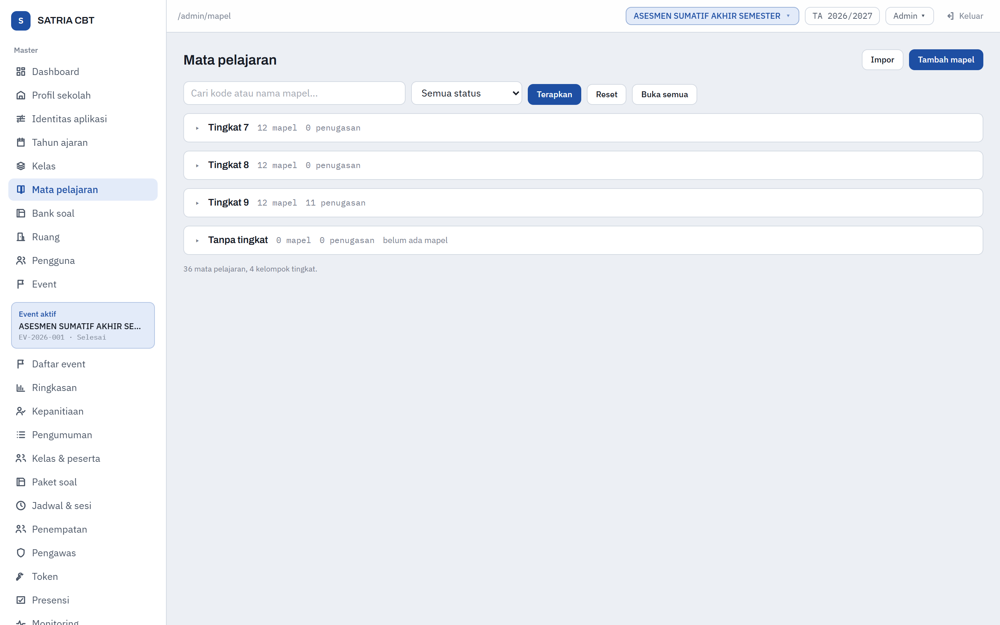

4. Kelas & mata pelajaran
Siapa duduk di kelas mana, dan siapa mengajar apa. Dua laman, dan keduanya bisa diisi massal lewat berkas.
Kelas

Kelas punya tiga hal yang dipakai aplikasi:
- Tingkat — dipakai menyaring mata pelajaran yang relevan saat memasang paket soal.
- Wali kelas — hanya keterangan; tidak memberi hak akses apa pun.
- Anggota — siswa yang masuk kelas ini. Daftar inilah yang ditarik menjadi peserta event.
-
Tekan Tambah kelas, isi nama dan tingkatnya.
-
Klik nama kelas untuk membuka daftar anggotanya, lalu tambahkan siswa.
Mata pelajaran

Mata pelajaran dikelompokkan menurut tingkat dengan sengaja: satu mapel yang sama bisa ada di beberapa tingkat, dan daftar rata membuat keduanya sulit dibedakan.
Menugaskan guru ke mata pelajaran
Mapel yang belum punya guru tidak bisa dipakai untuk mengajar, tetapi tetap bisa diujikan. Yang menolak hanyalah penugasan mengajar — bukan pembuatan ujian.
Mengisi massal lewat berkas
Baik kelas maupun mata pelajaran punya tombol Impor. Keduanya bekerja sama: unduh template, isi, unggah, lalu periksa pratinjaunya sebelum apa pun disimpan.
-
Tekan Impor, unduh templatenya, isi di luar aplikasi.
-
Unggah. Aplikasi menampilkan pratinjau baris per baris — mana yang akan dibuat, mana yang akan diperbarui, dan mana yang ditolak beserta alasannya.
-
Periksa, lalu konfirmasi. Tidak ada yang tersimpan sebelum langkah ini.